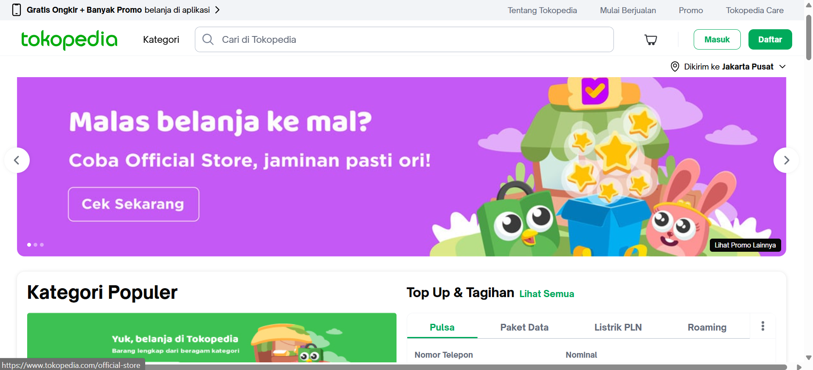

Interaksi Manusia Komputer
Nama : Ivan Christian
NIM : 8020240023
Tugas 2
Analisis Usability Aplikasi Tokopedia
1. Pendahuluan
Usability adalah proses menilai dan meningkatkan kemudahan penggunaan suatu aplikasi atau sistem melalui pengujian langsung kepada pengguna agar antarmuka menjadi lebih efektif, mudah dipahami, nyaman digunakan, dan mampu membantu pengguna menyelesaikan tugas dengan baik.
2. Deskripsi Aplikasi
Aplikasi yang dijelaskan adalah Tokopedia.
Tokopedia merupakan aplikasi marketplace Indonesia yang digunakan untuk membeli dan menjual berbagai produk secara online. Aplikasi ini menyediakan fitur pencarian produk, keranjang belanja, pembayaran digital, pelacakan pesanan, promo, dan layanan dompet digital.
3. Analisis Usability
a. Efektivitas
Tokopedia cukup efektif membantu pengguna melakukan aktivitas belanja online, mulai dari mencari produk hingga menyelesaikan pembayaran. Fitur pencarian dan kategori produk membantu pengguna menemukan barang dengan cepat.
b. Efisiensi
Aplikasi memiliki proses checkout yang relatif cepat karena tersedia metode pembayaran otomatis seperti transfer bank, e-wallet, dan COD. Namun banyaknya promo dan iklan terkadang membuat pengguna membutuhkan waktu lebih lama untuk fokus pada tujuan utama.
c. Kepuasan
Sebagian besar pengguna merasa puas karena tampilan aplikasi modern, banyak pilihan produk, dan transaksi mudah dilakukan. Adanya fitur ulasan produk juga meningkatkan kepercayaan pengguna.
-
Apakah aplikasi mudah digunakan?
Ya, aplikasi cukup mudah digunakan karena menu utama terlihat jelas dan fitur-fitur utama mudah ditemukan. -
Apakah navigasi jelas?
Navigasi cukup jelas dengan adanya menu:- Beranda
- Kategori
- Keranjang
- Notifikasi
- Akun
-
Apakah user flow sederhana?
Secara umum sederhana: Cari produk → pilih produk → masukkan keranjang → checkout → pembayaran. Namun beberapa pengguna baru mungkin bingung karena terlalu banyak fitur tambahan di halaman utama. -
Apakah user merasa nyaman?
Ya, pengguna merasa nyaman karena desain aplikasi menarik, konsistensi warna, dan proses transaksi cukup aman. -
Apa kekurangan aplikasi?
- Terlalu banyak iklan dan banner promosi.
- Halaman utama terasa ramai.
- Beberapa fitur tersembunyi di banyak submenu.
- Loading terkadang lambat pada koneksi internet rendah.
-
Apa saran perbaikannya?
- Mengurangi jumlah promosi spanduk.
- Menyederhanakan tampilan beranda.
- Mempercepat kinerja aplikasi.
- Membuat fitur penting lebih mudah diakses.
4. Kekurangan Sistem
Masalah usability yang ditemukan:
- Tampilan informasi terlalu padat.
- Pengguna baru dapat mengalami kesulitan saat pertama menggunakan aplikasi.
- Navigasi beberapa fitur kurang sederhana.
- Banyak pop-up promo yang mengganggu pengalaman pengguna.
5. Saran Perbaikan
- Membuat desain lebih minimalis dan fokus pada kebutuhan utama pengguna.
- Mengurangi pop-up dan notifikasi promosi berlebihan.
- Mengoptimalkan kecepatan memuat aplikasi.
- Menambahkan panduan singkat untuk pengguna baru.
- Menyusun ulang menu agar fitur utama lebih mudah ditemukan.
6. Kesimpulan
Tokopedia memiliki usability yang cukup baik karena mudah digunakan, navigasi yang jelas, dan proses transaksi yang sederhana. Namun, aplikasi masih memiliki beberapa masalah seperti tampilan yang terlalu ramai dan banyak promosi yang dapat mengganggu pengguna. Dengan perbaikan pada desain dan navigasi, pengalaman pengguna dapat menjadi lebih nyaman dan efisien.
7. Screen Shoot Aplikasi
